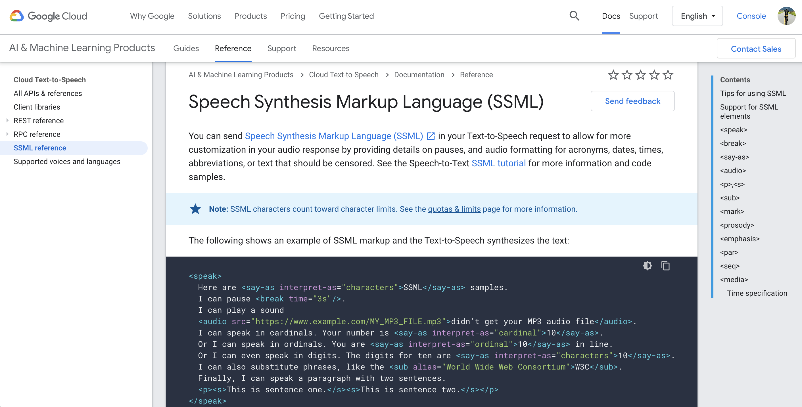

什麼是SSML(Speech Synthesis Markup Language)
語音合成標記語言(SSML)可以讓語音生成更有靈魂！它是 XML-formatted標記語法，提供更多生音生成的細節，透過提供關於eg. 暫停的細節，以及應該被審查的首字母縮寫、日期、時間、縮寫或文本的音頻格式，從而允許對音頻響應進行更多客製。
參數介紹
您可以使用 SSML 標記來自訂語音，例如加入停頓點、數字、日期與時間格式設定，以及其他發音指示。完整的標記共有12種，以下

簡介參數
<break>可以設定延遲若干毫秒，或是尾音變弱- 延遲
- 控制尾音變弱
- 延遲
<say-as>用來處理數字，看到 “1”- 我們可以指定讀作ordinal “First”，而不是One
<sub>用來處理縮寫的文字發音- W3C, 我們要指定唸為”World Wide Web Consortium” 而不是W3C單一字母發音
<prosody>除全文的pitch設定之外，你還可以針對各別句字、文字的設定pitch<s>除了text中的句號之外，可以自已指定句字的範圍
SSML操作
- 了解一下SSM置入的位置
我們可以從官方體驗頁面，可以看到標記<break time="400ms"/> - 範例的應用是使句尾延遲 400ms，讓語音不要太早到下一個段落，好使聽者有時間思考
實作
Step 1. Create synthetic speech from text
Token準備：使用當前auth token
gcloud auth application-default print-access-token選擇發音的語系voice source，可以參考以下
https://cloud.google.com/text-to-speech/docs/voices再來就是最重要的部驟，需要生成一個json檔：
synthesize-text.json其中JSON-formatted 參數值如下，分成三大塊
input主要生成語音的文字內容voice生成聲音的語言、發音版本、是否使用SSMLaudioConfig聲音編碼的格式
Step 2: Create synthetic speech from SSML
- 範例 synthesize-ssml.json，採用了以下
<speak><s><emphasis><prosody><say-as><break> - 讓整體語音聽起真像是真的人說話的感覺，對於英文來說intonation，意思就是可以讓聽眾更清楚你講話的重點
1 | { |
2 | 'input':{ |
3 | 'ssml':'<speak><s> |
4 | <emphasis level="moderate">Cloud Text-to-Speech API</emphasis> |
5 | allows developers to include natural-sounding |
6 | <break strength="x-weak"/> |
7 | synthetic human speech as playable audio in their |
8 | applications.</s> |
9 | <s>The Text-to-Speech API converts text or |
10 | <prosody rate="slow">Speech Synthesis Markup Language</prosody> |
11 | <say-as interpret-as=\"characters\">SSML</say-as> |
12 | input into audio data |
13 | like <say-as interpret-as=\"characters\">MP3</say-as> or |
14 | <sub alias="linear sixteen">LINEAR16</sub> |
15 | <break strength="weak"/> |
16 | (the encoding used in |
17 | <sub alias="wave">WAV</sub> files).</s></speak>' |
18 | }, |
19 | 'voice':{ |
20 | 'languageCode':'en-gb', |
21 | 'name':'en-GB-Standard-A', |
22 | 'ssmlGender':'FEMALE' |
23 | }, |
24 | 'audioConfig':{ |
25 | 'audioEncoding':'MP3' |
26 | } |
27 | } |
執行代碼
1 | curl -H "Authorization: Bearer "$(gcloud auth application-default print-access-token) \ |
2 | -H "Content-Type: application/json; charset=utf-8" \ |
3 | -d @synthesize-ssml.json "https://texttospeech.googleapis.com/v1/text:synthesize" \ |
4 | > synthesize-ssml.txt |
運行結果
Step 3. python decode
- 這邊一邊需要decode動作，來把加密的text先解密再轉換成語音
1 | python tts_decode.py --input "synthesize-ssml.txt" --output "synthesize-ssml-audio.mp3" |
- index.html
1 | <html> |
2 | <body> |
3 | <h1>Cloud Text-to-Speech Demo</h1> |
4 | <p> |
5 | Output from synthesizing text: |
6 | </p> |
7 | <audio controls> |
8 | <source src="synthesize-text-audio.mp3" /> |
9 | </audio> |
10 | <p> |
11 | Output from synthesizing SSML: |
12 | </p> |
13 | <audio controls> |
14 | <source src="synthesize-ssml-audio.mp3" /> |
15 | </audio> |
16 | </body> |
17 | </html> |
Step 4.語音驗證
- 最後最出2個檔案，分別是有無使用SSML生成語音，可以比較二種不同的感覺
- 因為範例把SSML運用得淋淋盡致，使得效果非常的明顯
- 如果你沒法執行程式，可以直接使用Google官方測試頁面體驗，把Step 2代表直接貼進去